Ayham Alhasan
Personal Portfolio
An ITU Computer Engineering Student, Too Interested In learning Technology :)
Who I Am
I'm Ayham, a third-year Computer Engineering student at Istanbul Technical University. I work on developing algorithms, autonomous systems, and computer vision for aircraft, while actively exploring embedded systems. I've experimented and built with a wide range of programming languages, tools, and technologies to find where my strengths and interests truly lie, which has given me a broad and practical perspective for building future projects more mindfully.

Team Projects
Simplified Air Defense System (Finalist Project)
Description: Worked with my team to develop a simplified air defense system in Teknofest competition designed to detect and neutralize airborne objects represented by moving balloons, with the objective to pop them using fully autonomous machine.
Methodology And Role: I was responsible for developing the balloons detection algorithms using OpenCV and YOLO libraries, where the codes were written using OOP principles.
Result: I have learned computer vision skills, We achieved finalist rank, out of 3 rounds, only 20 teams went to final round.
View T3 CertificateTEKNOFEST Fixed-Wing Aircraft Project
Description: Currently working on a fixed-wing aircraft project for the TEKNOFEST competition, with planned participation in an international event in England. The project focuses on developing an autonomous airplane capable of performing maneuvers and executing a task that detects multiple targets and releasing payloads in time constraint.
Methodology And Role: Responsible for developing automation algorithms and the communication layer using MAVLink and Pymavlink, integrating computer vision outputs into autonomous flight decision-making system. Mission Planner and ArduPilot are used based on the current situation and communication data collected via Mavlink. Also contribute to computer vision tasks when needed.
After the plane finding the two objects, a normalized vectored line is taken between the two objects, then the plane uses Dubins Path theorem to find the shortest path to target 2 while being parallel to the normalized line to drop the objects. In addition to including real-time dropping calculations mechanisms.
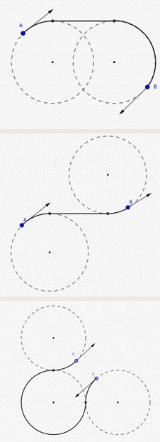
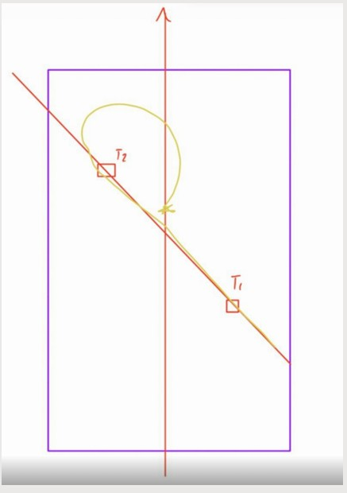
Personal Projects
Custom CPU Design And Implementation
Description: I developed a mini-architecture CPU from scratch imitating a simplified functioning RISC CPU using Verilog programming language.
Methodology:
- In the first stage, all necessary components were designed from scratch, including 16/32-bit registers, instruction registers, data registers, register files, ALU, etc. ensuring each part was equipped with appropriate flags and bit widths for functionality
- In the second stage, I integrated these components into the ALU system, using a custom, simplified architecture. This integration enables the CPU to perform basic operations.
- In the third stage, I implemented the fetch-decode-execute cycle, introducing instructions to power the CPU. This process covered all essential operations, ensuring the system was capable of correctly fetching, decoding, and executing instructions as part of its core functionality. totaling 36 operations.
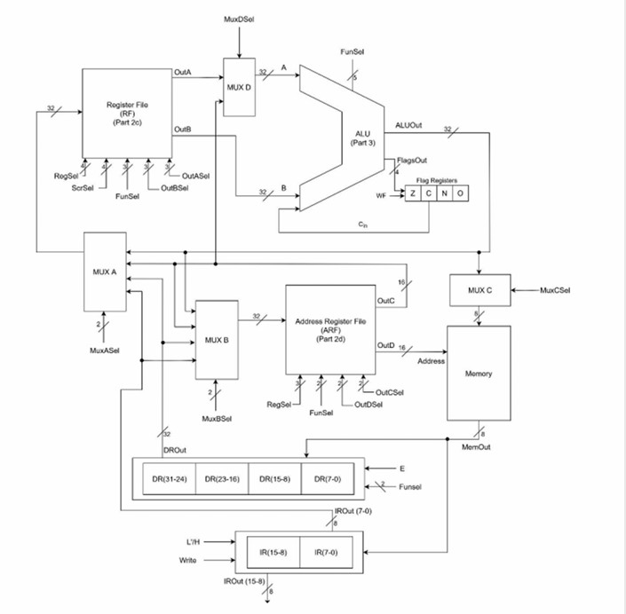
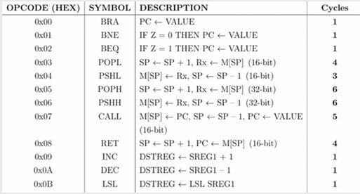
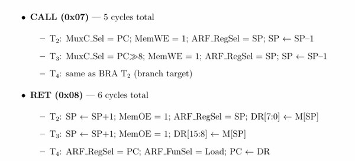
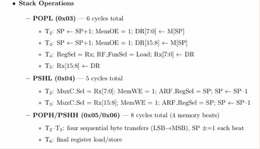
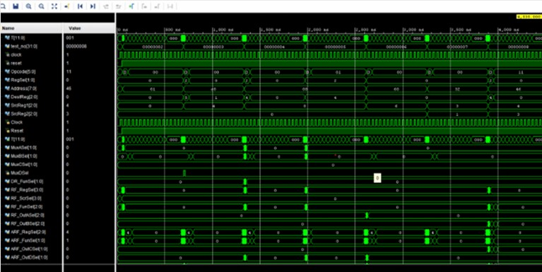
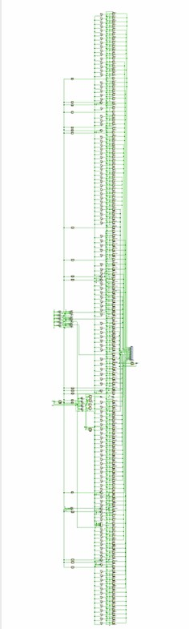
Process Management System
Description: I built a simplified process management system in C that simulates how an operating system schedules and executes processes based on priority, arrival time, and failure conditions, handeling interrupts and executing without breaking. The system imitates real OS behavior like priority-based execution, grouped connected processes, and processing failures.
Methodology: The system is designed using multiple data structures. Processes are grouped into process queues to represent related parent-child processes, which must execute consecutively. These queues are managed inside a double-ended queue (deque) that preserves priority, allowing high-priority processes to be executed before low-priority ones.
Processes that arrive during execution are stored in a separate insertion queue, and are added to the system later. If a process fails -if the id of the process is a multiple of 8- then the process and its remaining related tasks are pushed into a failure stack for later inspection.
Program Flow: Process Manager → process queues → processes if a process fails it goes to failure stack.
View on GitHub

Connect Four Using Generic Trees with Built-In Bot
Description: Developed a fully in-terminal playable Connect Four game in C using generic trees and binary search trees. The game supports both human-versus-human and human-versus-bot modes.
Methodology: The program is created of two parts, the game mechanism, and the bot.
1- The game mechanism: it uses generic tree to store all possible moves according to connect-four rules, since the number of moves is not known the generic tree is used. Then the possible stored boards are used to calculate the best move by the bot.
2- The bot: uses minmax algorithm with the help of Binary Search Trees to calculate the best possible move, by choosing the move with the least cost, meaning it is the move that yields best result. Positive values indicate advantage of yellow player, negative indicate advantage or orange player. The yellow nodes choose the biggest children value, the red chooses the maximum children
View on GitHub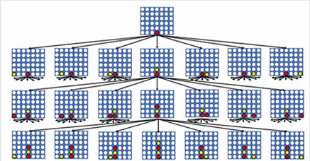
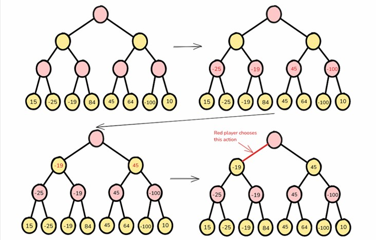
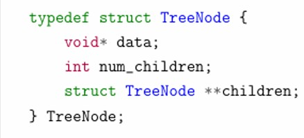
Operating System Processing System
Description: Implemented a simplified version of the Linux Completely Fair Scheduler (CFS) in C, giving fair CPU time allocation between processes based on their virtual runtime, processes with lower runtime are assigned higher priority. The project simulates how an operating system decides which process should run next.
Methodology: The scheduler is built by using Min-Heap data structure, implemented from scratch. Each process is stored in the min-heap based on its virtual runtime (vruntime) meaning how much time the process takes, the process with the lowest vruntime is always selected next, similar to how CFS operates. Unlike the real Linux CFS (which uses a Red-Black Tree), this project uses a Min-Heap to simplify the implementation while keeping the same core scheduling idea.
Process priorities are handled using "nice values", which directly affect how fast a process's vruntime grows, making the program more dynamic, presenting real scheduling systems more. As processes run, their vruntime is updated actively, and the heap is rebalanced using heap properties to maintain correct scheduling order. The scheduler supports process creation, selection, time progression (ticks), and removal.
the (ticks) are responsible for updating vruntime for currently running function and decide if it is still worth of the priority.
View on GitHub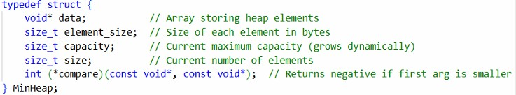
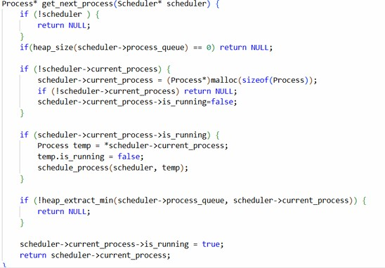
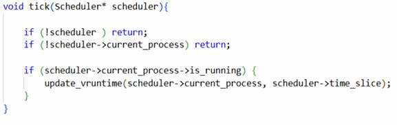
Pattern Finder for IQ Questions
Description: Implemented numerical patterns recognition system designed to solve IQ-style pattern questions, where hidden numerical relation need to be discovered.
Methodology: The objective is to calculate Z by finding the relation between X and Y. We store all possible operations based on the numbers' features. For instance, big numbers do not apply exponential operations, small numbers do not apply big divisions. The procedure is applied iteratively multiple times, and similar procedure is applied to Y.
Since the possible numbers are too big, they go exponentially, spanning from 9-27 billion operations. So complex optimization algorithms were used, inspired by optimization research papers, and self-developed sections.
View Project Live

Numerical Mapping and Analysis Using Python
Description: I developed a numerical mapping and analysis project to study the pedestrian road network of the ITU Ayazağa campus, with the goal of identifying area groupings based on connectivity using spectral clustering.
Methodology: The campus road network was modeled as a graph, where intersections are nodes and paths are edges. I implemented spectral clustering in Python by importing libraries for calculations and writing the logic code, constructing the graph Laplacian then computing its smallest eigenvectors using inverse power iteration, instead of imported solvers. These eigenvectors were then used to cluster the campus into different regions. The results were compared against a simple coordinate based k where higher k means higher accuracy.
View on GitHub

Data Base Website (EPA CARS)
Description: I worked on EPA CARS website, it is a system that allows the user to explore and compare vehicles efficiency data from the EPA Fuel Economy dataset. The platform provides detailed filtering and ranking of vehicles based on factors like MPG (combined, city, and highway), greenhouse gas scores, air pollution scores, etc. Users can query the dataset for specific manufacturers, model years, drivetrains, and SmartWay designations to visualize trends and compare vehicles.
Methodology:
- Database Design: A normalized schema was created, then tables like manufacturers, models, and efficiency metrics were connected using foreign and primary keys.
- ETL Pipeline: The raw dataset was loaded into a staging table, cleaned, then normalized to insert relationships between vehicles and their metrics.
- Backend & API: A Python Flask backend was developed to handle APIs for querying and filtering, with authentication for admin access for CRUD operations.
- Frontend: The frontend uses HTML, CSS, and JavaScript to display data interactively, allowing users to filter and compare vehicle efficiency metrics.


Cursor-based Painting System Using Interrupts
Description: I developed an assembly code that emulates painting program by coloring memory addresses in memory similar to user input. User inputs are represented as hex addresses, each value having its functions (e.g., Change brush color, Move up, Move right, Move down, Move left).
Methodology: I configured the SysTick timer to generate interrupts every 1 second, which updates the cursor position based on input. The cursor was able to move across a 32x8 pixel canvas, inputs outside this range are considered outside the program. The interrupt is assigned in R0 while transferred to R1paint in the memory. Address calculation utilizes base and offsets: Address = 0x20001000 + (y * 32) + x.
View on GitHub
Merge-sort Algorithm Using Assembly X86
Description & Methodology: Developed Merge-Sort algorithm using Assembly language. Both divide and conquer procedures were programmed using Assembly registers capability. The algorithm were implemented in two different ways:
- Array layout was used to store the arrays and subarrays.
- Stack was used to store arrays and subarrays during execution.